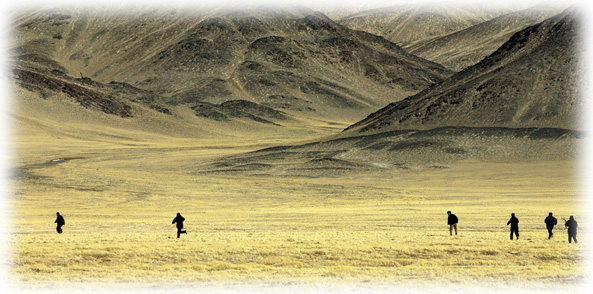

青海特色
（1）民俗文化
青海是花儿的故乡，河湟花儿是西北花儿的精魂，最美的花儿是用三江最纯净的源头之水浇灌的圣洁之花。居住在这里的汉、藏、回、土、撒拉等各族群众，无论在田间耕作，山野放牧，外出打工或路途赶车，只要有闲暇时间，都要漫上几句悠扬的“花儿”。可以说，人人都有一副唱“花儿”、漫“少年”的金嗓子。青海农民唱起“花儿”，村里的张秀花、王富贵们就会泪水涟涟。花儿对青海人来说象每天的饮食一样普通。
花儿又名少年。花儿是产生于青海，并流行于青、甘、宁、新等地区的一种山歌，唱词浩繁，文学艺术价值较高，被人们称为西北之魂。花儿发源于临夏，由于流行的地区不同，加之在发展过程中受到西北各民族文化的影响，因此形成不同的流派和艺术风格，六盘山花儿就是其中的一种。回族群众喜爱花儿，是花儿的创造者、演唱者、继承者和传播者。花儿是心头肉，不唱由不得自家，可见回族对花儿的喜爱程度。流行于固原地区的花儿主要有两类：河州花儿和山花儿（俗称干花儿）。河州花儿委婉动听，基本调式和旋律有数十种，变体甚多。形式上有慢调和快调。慢调多为4/4或6/8拍，唱起来高亢、悠长，曲首曲间和句间多用衬句拖腔，旋律起伏大，上行多用四度调进，高音区多用假声。快调多为2/4或3/8拍，相对紧凑短小。河州花儿多为五声微调，在文学上自成体系。一般每首词由四句组成，前两句常用比兴，后两句切题。字数上单双交错，奇偶相间，不像一般民歌那么规整，故更加自由畅快。但是，固原回族多唱山花儿。山花儿在旋律上起伏较小，较多地应用五声羽调和角调，衬词衬句使用较少，段尾或句末用上滑音。在文学上除具有河州花儿的一些特征外，还派生出一些变体，有时也采用信天游或一般民谣体。演唱形式有自唱式和问答式。曲目无令之称，属抒情短歌。花儿音乐高亢、悠长、爽朗，民族风格和地方特色鲜明。不仅有绚丽多彩的音乐形象，而且有丰富的文学内容。反映生活、爱情、时政、劳动等内容。用比、兴、赋的艺术手法即兴演出。虽然大部分花儿的内容与爱情有关，但在歌颂纯真的爱和控诉封建礼教及社会丑恶现象给恋人造成生死苦难的同时，深刻反映了社会生活的各个方面，而且语言朴实、鲜明，比兴借喻优美，有比较高的文学欣赏和研究价值。20世纪80年代，花儿的演唱形式已发展到花儿歌舞剧。
（2） 地方小吃：（青海十大特色小吃）http://travel.sohu.com/20090912/n266681951.shtml

（3） 国际盛会：
夏都郁金香节
以花为媒，旅游牵线，文化搭台，经贸唱戏，展示高原独特的旅游资源，全面推介“中国夏都”品牌，宣传青海、西宁改革开放和经济建设的新成就，加大对外开放和招商引资力度，创造商机，增加人气，聚集财富，促进经济建设和各项社会事业发展。由青海省人民政府主办,西宁市人民政府承办。
青藏高原是郁金香花的故乡，民间流传着郁金香的美丽传说。90年代西宁市园林部门加强了对郁金香的研究和培植，创造了培育郁金香球根的可贵经验，培育出了高原郁金香的新品种。成为全国郁金香研究和培植的重要基地。从1997年以来曾多次在西宁和兰州等地举办郁金香展览，受到西北群众的热烈欢迎。此次中国-青海郁金香节，西宁市的园艺科技工作者和广大花农，将把自己精心培育的高原郁金香奉献给全国和世界观众。
环湖赛
环湖赛从2002年开始，每年7至8月在青海省举行。经国际自行车联盟批准，环湖赛为2.HC级，是亚洲顶级赛事，也是世界上最高海拔的国际性公路自行车赛。仅次于环法赛、环意大利赛、环西班牙赛等职业巡回赛。每年比赛有来自世界五大洲的20支左右运动队100多名运动员参加，比赛总距离1300公里，平均海拔3000多米，赛程9天，奖金总额25万美元。比赛线路设计以碧波浩瀚、鸟翼如云的青海湖为中心，并向周边地区延伸，沿途自然风光雄奇壮美，旖旎迷人。
环湖赛是青海省内三大招商平台之一，也是青海省委、省政府宣传青海的重要举措，它的重要特点之一是各级政府高度重视，各个部门积极参与，其宣传推广具有商业运作与政府资源和媒体优势紧密结合的特色。因为有国家广电总局和中央电视台的参与，赛事在品牌推广和媒体资源上具备了与生俱来的强力，得到国内外很多媒体的关注。自2002年起，每年4月至8月，中央电视台第5套、2套、3套和12套节目以及青海省内各大媒体持续黄金时段高密度播放“环湖赛”公益宣传片和赛事主题歌MTV，使环湖赛品牌在短期内获得了很高的知名度。
青洽会：
青洽会全称为：中国青海结构调整暨投资贸易洽谈会。
青洽会是在国家实施西部大开发战略大背景下创办的，自2000年起已成功举办了六届。会议主要特色是突出结构调整、东西部合作、区域经济协调发展。会议举办对于加快西部省区特别是青海对外开放的步伐，广泛开展东西部合作，吸引东部企业参与西部经济结构调整和特色经济构建，实现国有经济战略性重组，加快生态环境保护、基础设施建设、优势资源开发，扩大对外宣传，实现招商引资目标，推动西部大开发战略的实施等方面起到重要促进作用 据统计，前五届洽谈会共签订各类经济技术合作项目1198个，实现项目合作金额959亿元，贸易金额128亿元，取得了较大成效。
|